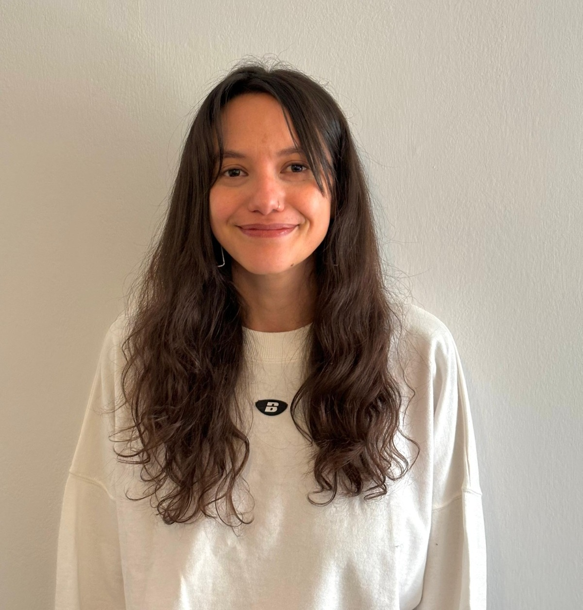

Te propongo armar un encuadre adecuado a tus necesidades, en particular si sos migrante o nómada digital.
Encontrarás un espacio libre de prejuicios, respetuoso hacia tu identidad y construido de manera conjunta.
En las sesiones vamos a hablar de tu historia personal y familiar, de tu presente y motivo de consulta actual y también de cómo te proyectás a futuro.
Vamos a elaborar conjuntamente hipótesis sobre lo que te preocupe para analizar soluciones posibles y sustentables en el tiempo.
También vamos a dedicar tiempo a hablar del trabajo, los afectos, el tiempo libre, redes vinculares y comunitarias.
Si bien voy a hacerte preguntas orientadoras, tus opiniones y percepciones siempre serán lo más importante.
"Un espacio libre de prejuicios, respetuoso hacia tu identidad y construido de manera conjunta."— Marina Breslin
Si tenés alguna duda antes de pedir turno, escribime directamente.
¿Querés reservar un turno? Elegí el día y horario que mejor se adapte a vos. El proceso toma menos de 2 minutos.
Solicitar turno →